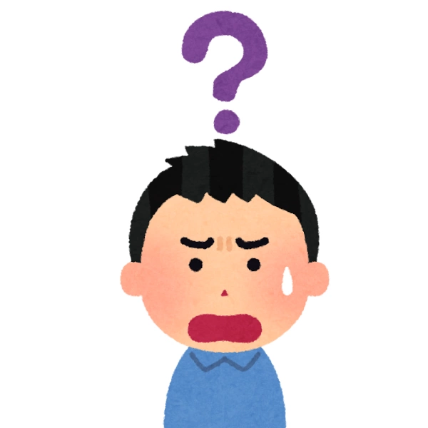
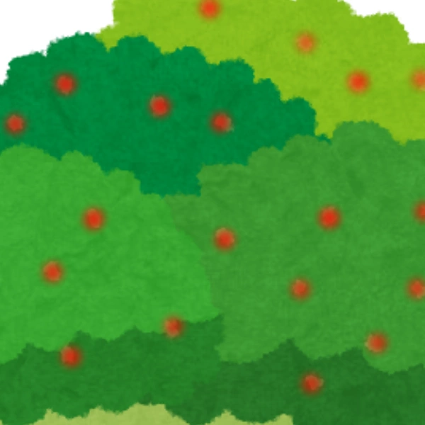

今天我们来学习一下疑问句和颜色的表达。
在一般疑问句中，我们只需要在陈述句的结尾加上表疑问的助词(sen)。
在阅读的时候，最好在句末语调上扬。
而特殊疑问句就不同了。
人类语有如下的特殊疑问词: (什么 sus) (谁 sy) (哪里 sua) (何时 sys) (怎么；如何 sio) (为什么 jansus) (哪个 suspa)
特殊疑问句的语序不发生变化，因为人类语毕竟还是分析语，保持SVO语序还是很重要的。
而且，最好不要在特殊疑问句句末加(sen)，这样能保证句子的简洁。
人类语没有问号，一个原因是(sen)的字形就是来自于问号，再加上一个问号就很多余了，另一个原因是人类语字体里就没有问号，这确实某种程度上算是阿喀琉斯的脚后跟（如果大家去买粗陶的花盆的话，就会发现这种情况一般称作“微瑕”）
例如: . 这是什么？
. 何意味？
. 谁是一个香香软软的小蛋糕？
（如果你的"人类语万词表.xlsx"没有到1.2版本，那应该是没有蛋糕这个词的。为了防止更新太频繁，更新频率会减慢，有时候最新的词无法及时更新，请谅解）
,. 那么，老鼠是什么颜色的？
. 老鼠是褐色的。
人类语里，褐色（ kyvitio）的直译就是“老鼠的颜色”，可见，人类语里的颜色词都是名词+颜色助词( tio)
例如: (红色 hatio) (绿色 vatio) (黄色 hytio) (蓝色 hitio) (白色 huatio) (黑色 netio)
（其实太阳不是黄色的，只是从地球上看是黄色的）
那么，我们第四节课的内容就结束了。如果有问题的话，请在人类语交流QQ群1053556105里提问。
0/0

知否（你知道吗）

应是绿肥红瘦
__,__.